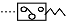

굴삭기운전기능사 (2007-07-15 기출문제)
1. 디젤기관의 연료장치 구성품이 아닌 것은?
- 예열플러그
- 분사노즐
- 연료공급펌프
- 연료여과기
(정답률: 71%)

2. 프라이밍 펌프는 어느 때 사용하는가?
- 출력을 증가시키고자 할 때
- 연료계통에 공기를 배출 할 때
- 연료의 양을 가감할 때
- 연료의 분사압력을 측정할 때
(정답률: 64%)
3. 압력식 라디에이터 캡에 대한 설명으로 적합한 것은?
- 냉각장치 내부압력이 규정보다 낮을 때 공기밸브는 열린다.
- 냉각장치 내부압력이 규정보다 높을 때 진공밸브는 열린다.
- 냉각장치 내부압력이 부압이 되면 진공밸브는 열린다.
- 냉각장치 내부압력이 부압이 되면 공기밸브는 열린다.
(정답률: 53%)
4. 동절기 기관이 동파되는 원인으로 맞는 것은?
- 냉각수가 얼어서
- 기동전동기가 얼어서
- 발전장치가 얼어서
- 엔진오일이 얼어서
(정답률: 77%)
5. 엔진오일을 사용하는 곳이 아닌 것은?
- 피스톤
- 크랭크축
- 습식 공기청정기
- 차동기어장치
(정답률: 40%)
6. 엔진오일에 대한 설명으로 맞는 것은?
- 엔진을 시동한 상태에서 점검한다.
- 겨울보다 여름에 점도가 높은 오일을 사용한다.
- 엔진오일에는 거품이 많이 들어있는 것이 좋다.
- 엔진오일 순환상태는 오일레벨 게이지로 확인한다.
(정답률: 64%)
7. 배기가스의 색과 기관의 상태를 표시한 것으로 가장 거리가 먼 것은?
- 무색 - 정상
- 검은색 - 농후한 혼합비
- 황색 - 공기청정기의 막힘
- 백색 또는 회색 - 윤활유의 연소
(정답률: 63%)
8. 디젤엔진에 사용되는 과급기의 주된 역할 설명으로 가장 적합한 것은?
- 출력의 증대
- 윤활성의 증대
- 냉각효율의 증대
- 배기의 점화
(정답률: 79%)
9. 디젤기관에서 시동이 되지 않는 원인으로 맞는 것은?
- 연료공급 펌프의 연료공급 압력이 높다.
- 가속 페달을 밟고 시동하였다.
- 배터리 방전으로 교체가 필요한 상태이다.
- 크랭크축 회전속도가 빠르다.
(정답률: 75%)
10. 우수식 크랭크축이 설치된 4행정6실린더 기관의 폭발 순서는?
- 1-3-2-5-6-4
- 1-4-3-5-2-6
- 1-5-3-6-2-4
- 1-6-2-5-3-4
(정답률: 66%)
11. 디젤엔진의 진동원인이 아닌 것은?
- 4기통 엔진에서 한 개의 분사노즐이 막혔을 때
- 인젝터에 불균률이 있을 때
- 분사압력이 실린더 별로 차이가 있을 때
- 하이텐션 코드가 불량할 때
(정답률: 66%)
12. 가솔린기관과 비교한 디젤기관의 단점이 아닌 것은?
- 소음이 크다.
- RPM이 높다.
- 진동이 크다.
- 마력당 무게가 무겁다.
(정답률: 64%)
13. 전동기의 종류와 특성 설명으로 틀린 것은?
- 직권전동기는 계자 코일과 전기자 코일이 직렬로 연결된 것이다.
- 분권전동기는 계자 코일과 전기자 코일이 병렬로 연결된 것이다.
- 복권전동기는 직권 전동기와 분권전동기 특성을 합한 것이다.
- 내연 기관에서는 순간적으로 강한 토크가 요구되는 복권전동기가 주로 사용된다.
(정답률: 64%)
14. 예연소실식 디젤기관에서 연소실 내의 공기를 직접 예열하는 방식은?
- 맵 센서식
- 예열플러그식
- 공기량계측기식
- 흡기가열식
(정답률: 74%)
15. AC발전기에서 다이오드의 역할로 가정 적합한 것은?
- 교류를 정류하고 역류를 방지한다.
- 전압을 조정한다.
- 여자 전류를 조정하고 역류를 방지한다.
- 전류를 조정한다.
(정답률: 63%)
16. 야간작업시 헤드라이트가 한쪽만 점등되었다. 고장원인으로 가장 거리가 먼 것은? (단, 헤드램프 퓨즈가 좌, 우측으로 구성됨)
- 헤드라이트 스위치 불량
- 전구 접지불량
- 회로의 퓨즈단선
- 전구 불량
(정답률: 58%)
17. 전기회로에서 퓨즈의 설치 방법은?
- 직렬
- 병렬
- 직ㆍ병렬
- 상관없다.
(정답률: 56%)
18. 건설기계용 납산축전지에 대한 설명으로 틀린 것은?
- 화학에너지를 전기에너지로 변환하는 것이다.
- 완전 방전시에만 재충전 한다.
- 전압은 셀의 수에 의해 결정된다.
- 전해액 면이 낮아지면 증류수를 보충하여야 한다.
(정답률: 73%)
19. 크롤러 타입 유압식 굴삭기의 중행 동력으로 이용되는 것은?
- 전기 모터
- 유압 모터
- 변속기 동력
- 차동 장치
(정답률: 72%)
20. 무한궤도식 건설기계에서 트랙의 장력을 너무 팽팽하게 조정했을 때 미치는 영향으로 가장 거리가 먼 것은?
- 트랙 링크의 마모
- 프론트 아이들러의 마모
- 트랙의 이탈
- 스프로킷의 마모
(정답률: 55%)
21. 지게차에서 주행 중 핸들이 떨리는 원인으로 틀린 것은?
- 노면에 요철이 있을 때
- 포크가 휘었을 때
- 휠이 휘었을 때
- 타이어 밸런스가 맞지 않을 때
(정답률: 69%)
22. 타이어식 건설기계의 타이어에서 저압타이어의 안지름이 20In, 바깥지름이 32In, 폭이 12In, 플라이수가 18인 경우 표시방법은?
- 20.00-32-18PR
- 20.00-12-18PR
- 12.00-20-18PR
- 32.00-12-18PR
(정답률: 36%)
23. 기중기의 붐이 하강하지 않는다. 그 원인에 해당 되는 것은?
- 붐과 호이스트 레버를 하강방향으로 같이 작용시켰기 때문이다.
- 붐에 큰 하중이 걸려 있기 때문이다.
- 붐에 너무 낮은 하중이 걸려 있기 때문이다.
- 붐 호이스트 브레이크가 풀리지 않는다.
(정답률: 56%)
24. 로더의 토사깍기 작업방법으로 잘못된 것은?
- 특수 상황 외에는 항상 로더가 평행 되도록 한다.
- 로더의 무게가 버킷과 함께 작용 되도록 한다.
- 깍이는 깊이 조정은 붐을 약간 상승시키거나 버킷을 복귀 시켜서 한다.
- 버킷의 각도는 35°- 45°로 깍기 시작하는 것이 좋다.
(정답률: 42%)
25. 주행 중 급가속시 기관 회전은 상승하는데 차속은 증속이 안 될 때 원인으로 틀린 것은?
- 압력스프링의 쇠약
- 클러치 디스크 판에 기름 부착
- 클러치 페달의 유격 과대
- 클러치 디스크 판 마모
(정답률: 32%)
26. 토크 컨버터의 구성요소 중 기관에 의해 직접 구동되는 것은?
- 터빈
- 펌프
- 스테이터
- 가이드링
(정답률: 34%)
27. 건설기계를 등록 신청할 때 재출하여야 할 서류와 관련이 없는 것은?
- 건설기계 제원표
- 건설기계의 출처를 증명하는 서류
- 건설기계 조종사 면허증
- 건설기계의 소유자임을 증명하는 서류
(정답률: 33%)
28. 건설기계소유자는 건설기계의 도난 사고발생 등 부득이한 사유로 정기검사 신청기간 내에 검사를 신청할 수 없는 경우에 연기신청은 언제까지 하여야 하는가?
- 검사유효기간 만료일 10일 전까지
- 검사유효기간 만료일까지
- 검사신청기간 만료일까지
- 검사신청기간 만료일로부터 10일 이내
(정답률: 22%)
29. 건설기계의 구조 변경 범위에 속하지 않는 것은?
- 건설기계의 길이, 너비, 높이변경
- 적재함의 용량 증가를 위한 변경
- 조종장치의 형식변경
- 수상작업용 건설기계의 선체의 형식변경
(정답률: 59%)
30. 부분 건설기계정비업의 사업범위로 적당한 것은?
- 프레임 조정, 롤러, 링크, 트랙슈의 재생을 제외한 차제
- 원동기부의 완전분해정비
- 차체부의 완전분해정비
- 실린더헤드의 탈착정비
(정답률: 60%)
31. 건설기계 조종사 면허의 취소 정지처분 기준 중 면허취소에 해당 되지 않는 것은?
- 고의로 인명피해를 입힐 때
- 과실로 7명 이상에게 중상을 입힌 때
- 과실로 19명 이상에게 경상을 입힌 때
- 일천만원 이상의 재산피해를 입힌 때
(정답률: 77%)
32. 운전자의 준수사항에 대한 설명 중 틀린 것은?
- 고인 물을 튀게 하여 다른 사람에게 피해를 주어서는 안된다.
- 과로, 질병, 약물의 중독상태에서 운전하여서는 안된다.
- 보행자가 안전지대에 있는 때에는 서행하여야 한다.
- 운전석으로부터 떠날 때에는 원동기의 시동을 끄지말아야 한다.
(정답률: 83%)
33. 도로교통법상 서행 또는 일시 정지할 장소로 지정된 곳은?
- 안전지대 우측
- 가파른 비탈길의 내리막
- 좌우를 확인할 수 있는 교차로
- 교량 위를 통행할 때
(정답률: 48%)
34. 신호등이 없는 철길건널목 통과방법 중 맞는 것은?
- 차단기가 올라가 있으면 그대로 통과해도 된다.
- 반드시 일시정지 한 후 안전을 확인하고 통과한다.
- 신호등이 진행 신호일 경우에도 반드시 일시정지를 하여야 한다.
- 일시정지를 하지 않아도 좌우를 살피면서 서행으로 통과하면 된다.
(정답률: 74%)
35. 제 1종 운전면허를 받을 수 없는 사람은?
- 한쪽 눈을 보지 못하고 색채 식별이 불가능한 사람
- 양쪽 눈의 시력이 각각 0.5 이상인 사람
- 두 눈을 동시에 뜨고 잰 시력이 0.8이상인 사람
- 적색, 황색, 녹색의 색채 식별이 가능한 사람
(정답률: 88%)
36. 차의 신호에 대한 설명으로 틀린 것은?
- 신호는 그 행위가 끝날 때까지 하여야 한다.
- 신호의 시기 및 방법은 운전자가 편리한 대로 한다.
- 방향전환, 횡단, 유턴, 서행, 정지 또는 후진 시 신호를 하여야 한다.
- 진로 변경 시에는 손이나 등화로서 할 수 있다.
(정답률: 82%)
37. 유압유의 점검사항과 관계없는 것은?
- 점도
- 윤활성
- 소포성
- 마멸성
(정답률: 53%)
38. 유압장치에서 고압 소용량, 저압 대용량 펌프를 조합운전 할 때, 작동암이 규정 압력 이상으로 상승시 동력절감을 하기 위해 사용하는 밸브는?
- 감압밸브
- 릴리프밸브
- 시퀸스밸브
- 무부하밸브
(정답률: 37%)
39. 오일을 한쪽 방향으로만 흐르게 하는 밸브는?
- 릴리프밸브
- 체크밸브
- 파일럿밸브
- 로터리밸브
(정답률: 65%)
40. 유압 모터와 유압 실린더의 설명으로 맞는 것은?
- 둘다 회전운동을 한다.
- 모터는 직선운동, 실린더는 회전운동을 한다.
- 둘다 왕복운동을 한다.
- 모터는 회전운동, 실린더는 직선운동을 한다.
(정답률: 71%)
41. 단위시간에 이동하는 유체의 체적을 무엇이라 하는가?
- 토출암
- 드레인
- 언더랩
- 유량
(정답률: 69%)
42. 압력스위치를 나타내는 것은?

(정답률: 52%)
43. 유압장치에서 유압의 제어방법이 아닌 것은?
- 압력제어
- 방향제어
- 속도제어
- 유량제어
(정답률: 49%)
44. 다음 유압펌프 중 가장 높은 압력 조건에 사용할 수 있는 펌프는?
- 기어 펌프
- 로터리 펌프
- 플런저 펌프
- 베인 펌프
(정답률: 55%)
45. 유압펌프를 통하여 송출된 에너지를 직선운동이나 회전운동을 통하여 기계적 일을 하는 기기를 무엇이라고 하는가?
- 오일쿨러
- 제어밸브
- 액츄에이터(작업장치)
- 어큐뮬레이터(측압기)
(정답률: 72%)
46. 오일 탱크 관련 설명으로 틀린 것은?
- 유압유 오일을 저장한다.
- 흡입구와 리턴구는 최대한 가까이 설치한다.
- 탱크 내부에는 격판(배플 플레이트)를 설치한다.
- 흡입 스트레이너가 설치되어 있다.
(정답률: 64%)
47. 추락 위험이 있는 장소에서 작업할 때 안전관리상 어떻게 하는 것이 좋은가?
- 안전띠 또는 로프를 사용한다.
- 일반 공구를 사용한다.
- 이동식 사다리를 사용하여야 한다.
- 고정식 사다리를 사용하여야 한다.
(정답률: 83%)
48. 연료 파이프 피팅을 조이고, 풀 때 가장 알맞은 렌치는?
- 탭렌치
- 복스렌치
- 소켓렌치
- 오픈렌치
(정답률: 53%)
49. 아세틸렌 용접기에서 가스가 누설되는가를 검사하는 방법으로 가장 좋은 것은?
- 비눗물 검사
- 기름 검사
- 촛불 검사
- 물 검사
(정답률: 86%)
50. 동력 전달장치에서 가장 재해가 많이 발생할 수 있는 것은?
- 기어
- 커플링
- 벨트
- 차축
(정답률: 77%)
51. 작업현장에서 전기 기구를 취급할 때 틀린 사항은?
- 동력기구 사용시 정전 되었다면 전원 스위치를 끈다.
- 퓨즈가 끊어졌다고 함부로 손을 대서는 안 된다.
- 보호덮개를 씌우지 않은 백열전등으로 된 작업등을 사용한다.
- 안전점검 사항을 확인하고 스위치를 넣는다.
(정답률: 84%)
52. 크레인으로 무거운 물건을 위로 달아 올리 때 주의할 점이 아닌 것은?
- 달아 올린 화물의 무게를 파악하여 제한하중 이하에서 작업한다.
- 매달린 화물이 불안전하다고 생각될 때는 작업을 중지한다.
- 신호의 규정이 없으므로 작업자가 적절히 한다.
- 신호자의 신호에 따라 작업한다.
(정답률: 88%)
53. 작업에 필요한 수공구의 보관에 알맞지 않는 것은?
- 공구함을 준비하여 종류와 크기별로 구분한다.
- 공구는 소정의 장소에 보관한다.
- 날이 있거나 뾰족한 물건은 위험하므로 뚜껑을 씌워 둔다.
- 사용한 수공구는 녹슬지 않도록 손잡이 부분에 오일 을 발라서 보관하도록 한다.
(정답률: 80%)
54. 다음 중 화재의 분류가 옳게 된 것은?
- A급 화재 : 일반 가연물 화재
- B급 화재 : 금속 화재
- C급 화재 : 유류 화재
- D급 화재 : 전기 화재
(정답률: 80%)
55. 안전표지 종류가 아닌 것은?
- 안내 표지
- 허가 표지
- 지시 표지
- 금지 표지
(정답률: 67%)
56. 재해를 방지하기 위해 선풍기 날개에 의한 위험방지조치로 가장 적합한 것은?
- 망 또는 울 설치
- 역회전 방지장치 부착
- 과부하 방지장치 부착
- 반발 장비장치 설치
(정답률: 69%)
57. 액화천연가스에 대한 설명 중 틀린 것은?
- 기체상태에는 공기보다 가볍다.
- 가연성으로써 폭발의 위험성이 있다.
- LNG라고 하며 메탄이 주성분이 된다.
- 액체상태로 배관을 통하여 수요자에게 공급된다.
(정답률: 52%)
58. 도로굴착 공사로 인하여 가스배관이 20m 이상 노출되면 가스누출 경보기를 설치하도록 규정이 있다. 이 때 가스누출 경보기는 몇 m 마다 설치하도록 되어있는가?
- 10m
- 15m
- 20m
- 25m
(정답률: 41%)
59. 한국전력 맨홀 인근에서 굴삭 작업시 맨홀과 연결된 동선을 절단하였을 때의 조치방법은?
- 절단된 굵기보다 굵은 동선으로 연결한다.
- 절단된 상태로 두고 인근 한국전력사업소에 연락함.
- 절단된 양쪽 부분을 포개어 테이프로 안전하게 연결하면 된다.
- 절단된 채로 매몰한다.
(정답률: 81%)
60. 교류 전기에서 고전압이라 함은 최소 몇 V를 초과하는 전압을 말하는가?
- 220V 초과
- 380V 초과
- 600V 초과
- 750V 초과
(정답률: 32%)